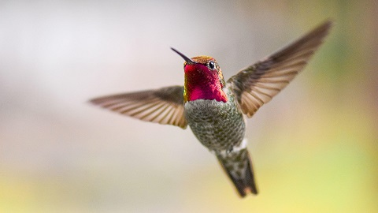

Why is Contrast Important
In terms of accessibility, web content should be easy to read and digest. It may enhance your website to throw a bunch of colors to make it look cool. However, is it accessible for an audience that has vision disabilities?
Contrast Example:
Make sure you use colors that contrast one another.
The quick brown fox jumps over the lazy dog
The quick brown fox jumps over the lazy dog
The quick brown fox jumps over the lazy dog
The quick brown fox jumps over the lazy dog
The quick brown fox jumps over the lazy dog
The quick brown fox jumps over the lazy dog
To ensure following web content accessibility guidelines (WCAG), WebAim can be used for testing out color and contrast. Here is the link to their Color Contrast Checker.
This picture has Alt Text
No Alt Text
